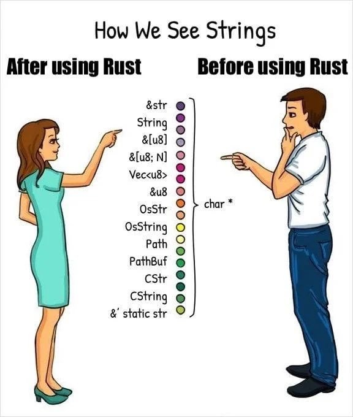

Week 3 :)
Slide template taken from Sylvain Wallez' Rust intro. This is rendered through Mdbook (which is how the Rust book is created).

This Weeks Content
- Chapter 5 - Using Structs to Structure Related Data
- Defining and Instantiating Structs
- Example Program Using Structs
- Method Syntax
- Chapter 6 - Enums and Pattern Matching
- Defining an Enum
- Match program Control Flow Construct
- Conscise Control Flow with if let and let else
- General thoughts
- Coding example

Motivation
We are all pretty busy and its been hard to find time for Rust recently. I felt some motivation may be needed.
By the end of our Rust journey we can confuse everyone with our Strings knowledge! 
Structs (structures)!
Grouping of related values (kind of like an object). Some comparisons I made initally...
| Language | Equivalent to Rust Structs |
|---|---|
| C++ | struct, class (without methods or with public fields) |
| Java | record |
| Python | dataclass (Python 3.7+)? |
| JavaScript/TypeScript | Interfaces or object literals ({}) |
Defining
State like tuple but we add name : type pairs (hence can be different types). For example
// Should this be camel case? struct CSstudent { name: String, // attributes (in OOP) email: String, coffee_addict: bool, total_commits: u64, }
Using structs
We create a variable and call the struct but adding concrete values after each name and can call by using attribute notation in other languages like java.
let student1 = CS_Student { // Doesnt need to be in order stated name: String::from("Jake"), email: String::from("ja250@st-andrews.ac.uk"), coffee_addict: true, total_commits: 400, } // grab attributes like so let jakes_email = student1.email; // Test - why would this NOT work? student1.email = String::from("other0@st-andrews.ac.uk");
Other neat features when declaring
- Can add pre known attributes (i.e dont need to init them).
- If param has the same name as attribute dont can use
attributeoverattribute : attributenotation.
- If param has the same name as attribute dont can use
- Can reference other structures attributes using the
..structure_namesyntax.- Is this sort of like inheritance / overriding?
- If we have types like u64 or bool that have copy trait would just copy over!
let student2 = CS_Student { name: String::from("julia"), email: String::from("julia@st-andrews.ac.uk"), ..student1 // take definitions for other attributes from student1 }
Variations
Tuple structs - values with unnamed attributes (eg we would probally use when value meaning is implied through index). struct Color(i32, i32, i32); (RGB). Accessed through .index notation
Any thoughts on other examples where we may use?
Unit-like structs - A struct without attributes (unit). We will learn more on why we may want this when discussing traits ! This will be equal to every other type 🤯
OWNERSHIP .......
When defining a struct we use String over &str because we want the instances to own all of its data.
Can have cases where struct references data owned by someone else but we need to know about lifetimes :/
We will find out more about this in section 10 (which feels like a lifetime away sadly...)
Example
The docs had an example. There is no point me re stating their example but would be nice to hear peoples peoples thoughts?
An example I thought of was in our Knight-Tour we could potentially have a Position (position on board) struct.
#[derive(Debug)] // This by itself is slightly pointless (compared to tuple) // ... but will make more sence when we add methods struct Position { x: u8, y: u8, }
Methods
Intuitively Methods are basically the same as class methods in most OO languages.
We create them by using impl (can have multiple per struct).
No such thing as getters and setters in Rust.
We use object.method() notation (dont need -> as rust automatically matches signature of method!).
Associated functions = methods that dont reference struct (i.e dont have self in params). Often use when we want to create new instance of struct.
impl Position { // Check if the position is within the board boundaries fn valid(&self) -> bool { // Using &self as we just want copy of attributes (not ownership) (0..WIDTH).contains(&self.x) && (0..WIDTH).contains(&self.y) }
Enums
These are used when defining types to enumerate through its different variants.
These are in other prog languages right? (python / java ect...)
We call then through :: i.e we namespace it up its id.
example
// From book enum IpAddrKind { V4, V6, } let four = IpAddrKind::V4; // double colon for specific kind or single colon for any of that type
When we use enums over structs?
- Say we dont know all attributes in advance only know type.
- Are able to have different types for variants (cant do this with a struct).
// their example enum IpAddr { V4(u8, u8, u8, u8), V6(String), }
But from my understanding anything that can be done with an enum can be replicated with multiple structs (obviously a bit longer to express).
We can also use methods with enums (with imp)???
Option Enum
Note - I have seen this in quite a lot of rust code so I think this is quite important
Its basically a type where it could be something (i.e not null) or null.
I suppose an example of this would be popping from a stack (to be honest this would probally throw an error before I imagine)?
Why do we need this ? -> RUST DOESNT HAVE A NULL TYPE ... - What are peoples thoughts on this?
Option is defined as -
enum Option<T> { // we dont need to bring into scope explicitly None, // We can call these directly if we want - if so can we not just think of None as null? Some(T), // T is a generic type parameter (we find out about this later) - T can hold any type }
Option examples
Rust will infer the type T.
let some_number = Some(5); // infers i32 let some_char = Some('e'); // infers char let absent_number: Option<i32> = None; // of type Option<i32> as we dont know what type some would be
But we need to note Option<T> != T! meaning we cant do normal type operations with Option if we have defined T with Some(value) (eg cannot add Option<i8> to i8). To fix this we must covert Option<T> to T by ensuring its not null. This means if we see a type that isnt Option<T> we know it cant be null!

Match Control flow construct
A bit like a more powerful version of Switch in Python / Java.
// Example they gave - helps us tell what variant of the type it is enum Coin { Penny, Nickel, Dime, Quarter, } fn value_in_cents(coin: Coin) -> u8 { match coin { Coin::Penny => 1, // These are the arms (have talked about this already) Coin::Nickel => 5, Coin::Dime => 10, // for multiline return statements on an arm use => {... u8} notation Coin::Quarter => 25, } }
Matching with Option<T>
The same idea as before but now the arms are None and Some(T) as these are the variants of Option.
This is useful for handling when we have the something there and when there isnt, for example we couldnt add Option<i8> to i8 directly because of the null case so we handle it like so.
fn plus_one(x: Option<i32>) -> Option<i32> { match x { None => None, Some(i) => Some(i + 1), } } let five = Some(5); let six = plus_one(five); let none = plus_one(None);
Match everything
We must remember if we use match to handle all variants! eg if we didnt handle the None arm then we would get an error as match is exhaustive!
Can use other or _ to catch all other cases (like default in cases)
if let and let else
Essentially for when we want to do matches on an Option<T> for example but only care about a certain arm (i.e dont do anything if it doesnt match on said arm).
However - this is means less exhaustive checking but shorter code.
We can replicate the behaviour of _ / other with else ->
if let Coin::Quarter(state) = coin {
println!("State quarter from {state:?}!");
} else {
count += 1;
}
let else (happy path)
If the pattern matches go the outer loop but if it doesnt execute whats inside the let else. This is known as the "happy path" as we dont need to change scope to deal with the case of no pattern match.
Example
In our knights tour we had -
match visited.iter().position(|a| a == &(x, y)) { Some(i) => print!("{:>3}", i), None => print!(" .") };
Given what we have learnt we could use if let instead!
if let Some(i) = visited.iter().position(|a| a == &(x, y)) { print!("{:>3}", i); } else { print!(" ."); }
Thanks for listening
Time for any questions / other thoughts ...